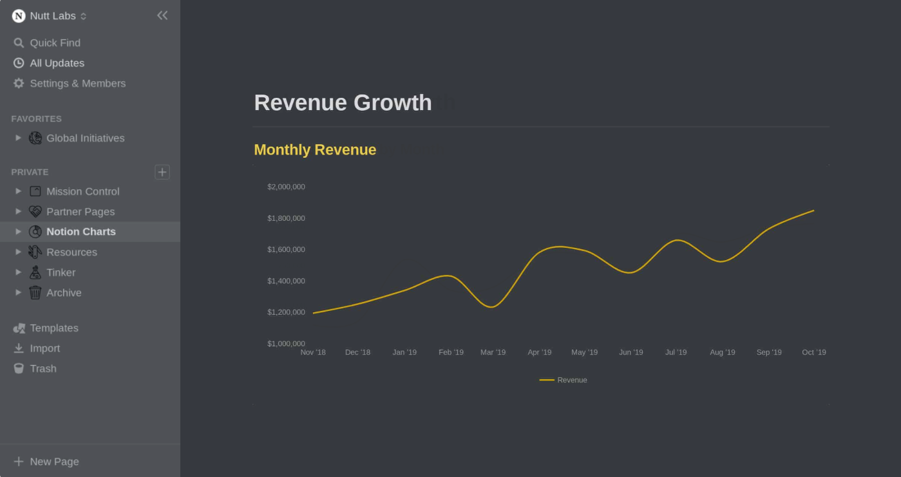

Charts for Notion
Generate embeddable charts — beautifully optimized for Notion.
This is a small hobby project of mine I did with the unofficial Notion-API and the google sheet chart tool
Notionvip Charts. Right now the API isn't capable of fetching values from formula and rollup columns. If you want to read more about this issues, it's already requested on GitHub
here. I'm hoping to implement these as well one day, maybe if Notion releases it's official API.
Please note that it can take some time, depending on the size of your table, because the values first need to be transferred to google sheets which takes some seconds.
Create your Chart
{{ text }}